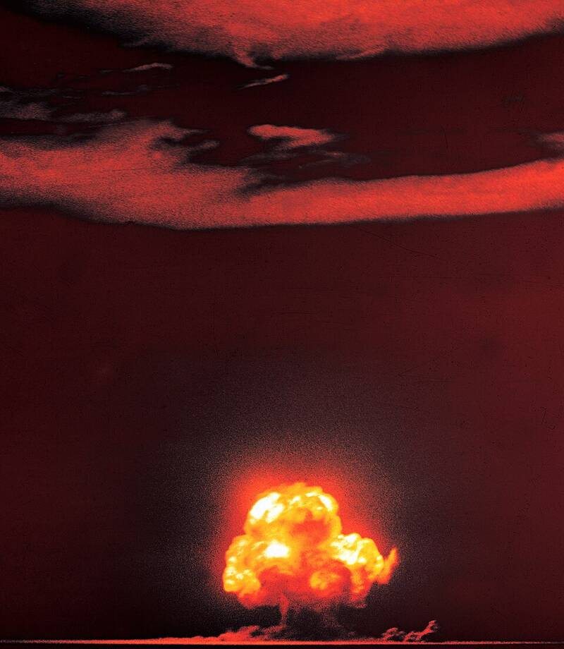

Trinity test site
Manhattan Project, July 1945

The world's first nuclear explosion, on July 16, 1945, inside what is now White Sands Missile Range. Confirmed program. 1
Open in the interactive Watcher
Related
- A craft crashed near the Trinity test site in August 1945 Claim
- Mantis beings Person
- J. Robert Oppenheimer Person
Sources
- Trinity (nuclear test) Wikipedia